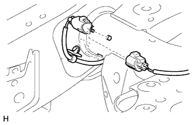
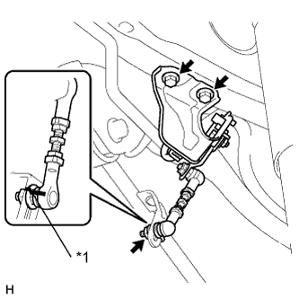

ДАТЧИК ВЫСОТЫ ПОДВЕСКИ > СНЯТИЕ |
| 1. СНИМИТЕ ПРАВЫЙ ДАТЧИК ВЫСОТЫ ЗАДНЕЙ ПОДВЕСКИ В СБОРЕ |
|  |
Отсоедините и снимите разъем.
Снимите зажим.
|  |
Нанесите сборочные метки на датчик высоты подвески.
Отверните гайку и отсоедините тягу датчика.
| *1 | Метки |
Выверните 2 болта и снимите датчик высоты подвески.